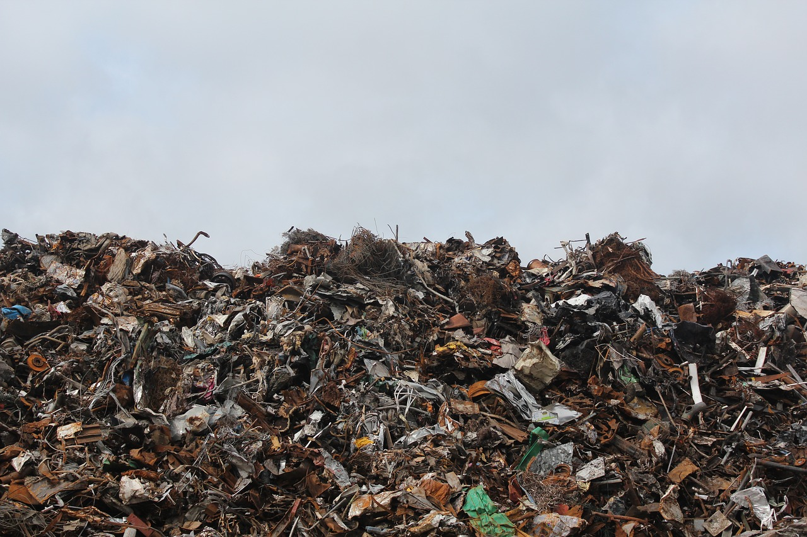

The existing widely enforced waste solution is simple: once the waste has been collected, dump them in the landfill. Here's the problem with that: hundreds who live near Indian landfills have claimed to be victims to deadly diseases such as tuberculosis and dengue. Some of the residents even expect a lower life expectancy. The dire health concerns regarding landfills are evident in other countries such as Kenya as well, where a UNEP study of 300 schoolchildren near a landfill in the suburb of Dandora, Nairobi found that about 50% of them had respiratory problems, and 30% had blood abnormalities signaling heavy-metal poisoning.
Apart from menacing health concerns, some pressing questions that landfilling imposes is won't we run out of land at some point? How long can we keep dumping waste? The scientific literature on this subject aggravates the intensity of these questions; a 2017 report observed that by 2050, India will need New-Delhi sized landfills to accommodate the growing waste mountains.
Won't we run out of land at some point? How long can we keep dumping waste?
Clearly, we need to actively look beyond landfills as a waste management measure if we were to address long-run health concerns and the conservation of our land resources.
How About We Burn Em' All?
Incineration, which is the burning of waste to generate energy, was pitted as the best solution by NITI Aayog in its Three Year Action Agenda. Though the idea of harnessing energy by getting rid of waste seems highly favorable, and would be the step in the right direction relative to waste stagnation, its effectiveness with respect to pollution has often come under sharp criticism. India, a nation which has a horrible pollution record and where one in eight deaths is attributed to air pollution, should go through rigorous introspection before deploying incineration on a larger scale.
Let's also not forget to heed this important fact: along with our existing problems, waste production is also increasing by 4% every year. This means that India has to cover solutions that also address the long run scenario in order to ease the impact of increasing waste accumulation. Solely relying on methods like incineration, whose scalability is highly questionable with respect to India's environmental scenario, may not allow us to effectually solve the long run aspect of the waste problem. Therefore, rather than focusing on unitary measures like incineration, a systemic change in the entire economic model is a must if we were to substantially handle the waste crisis.
India has to cover solutions that also address the long run scenario in order to ease the impact of increasing waste accumulation.
A Systemic Shift
The current Indian economic model tends to be very linear where products are manufactured, consumed and finally disposed with no regard to what happens after the product's end of life. Manufacturers and consumers play no role in handling waste, and the onerous task of waste management is almost entirely borne by the government. This lack of involvement by the manufacturer and the consumer, and the government’s sedate measures have lead the waste crisis to aggravate faster than it is being solved.
The problem with the linear model is that it considers resources to be infinite hence there exists no incentive to recycle, reuse, or repair products. Once a product reaches its end of life and is disposed, the life cycle is left bear open as the disposed waste is left untended by both the manufacturer and the consumer. This causes waste to be indefinitely accumulated without being treated.
What India needs is a transition towards an economic model that addresses the pressing issue of scarcity of resources, which would ultimately require waste to be reused and recycled in order to sustainably continue the product life cycle. The model should be more “circular”, where waste is constantly fed back into the cycle through circular measures such as recycling and repairing.
While the current linear model nullifies the role of waste and mostly considers it as being devoid to the economy, the circular model deems waste as an essential economic component that is used to further the product life cycle in a sustainable manner. This fundamental change in the perception of waste in the circular model would prevent waste stagnation and ensure active treatment.
In order to begin the journey to reinvent India’s waste management system and transition towards a more circular model, the linear norm of waste stagnation must first be eradicated. The amount of waste sent to landfills should be decreased and redirected to channels that make use of waste, opening the gates to circular measures such as recycling, repairing, and reusing.
The usage of economic tools could aid in the prevention of waste stagnation. For example, a Landfill Tax, which is a levy placed on landfill operators based on the amount and type of waste disposed, has been enforced by countries such as the UK and serves as a 'trickle-down' tax, wherein extra costs are passed down from the operators to the users of landfills. The main objective of this tax is to increase the cost of landfill, encouraging disposers to send lesser waste to landfill sites and look for alternative measures. Scotland had implemented a landfill tax in 1996 with annual increases and was able to decrease the amount of waste landfilled from 15 million to 4.63 million tonnes in 2012. The UK saw similar decrements since the inception of the tax in 1996, with figures plummeting from 35.7 million tonnes to 7.7 million tonnes in 2016. Similar to these countries, imposing a landfill tax in India could greatly aid in the diversion of waste from the landfill to the desirable inputs.
Imposing a landfill tax in India could greatly aid in the diversion of waste from the landfill to the desirable inputs.
While the circular economy has been garnering a lot of attention in the west, we are yet to see a major push in Indian dialogue. As the waste crisis looms over the nation's long-run development, it is vital that we do not fall for laggardly unitary measures and instead look toward systemic changes that solve our current problems and also secures a sustainable future. Perceptions towards waste by the manufacturers, government, and the consumers should change such that waste-expulsion becomes waste-propulsion.